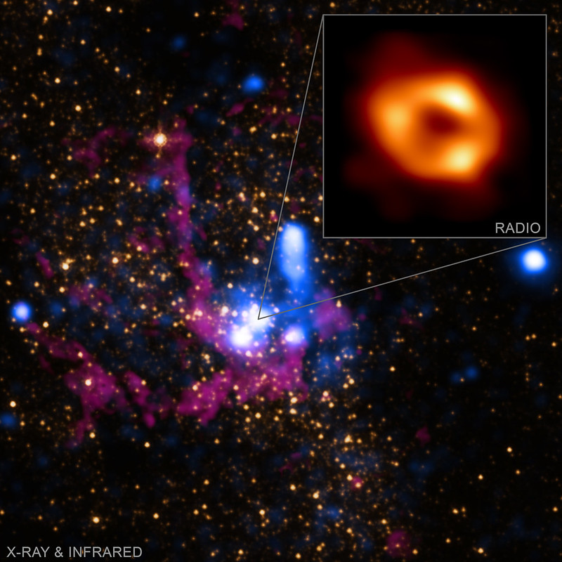

Sagittarius A*, a supermassive black hole
Photo by NASA Marshall at flickr, CC BY-NC 2.0
Some Interesting Astronomy Knowledge
Formation and basic properties of neutron stars and black holes
Formed from the supernova explosion of massive stars.
Both neutron stars and black holes are the collapsed core of some massive stars.
Typically, a star with a total mass of between 8 and 25 solar masses can form a neutron star. A star with greater mass has a chance of becoming a black hole after its collapse.
Neutron stars and black holes are extremely dense.
A neutron star's overall density is comparable to the approximate density of an atomic nucleus, while a black hole's overall density can be even higher.
Pulsars are special neutron stars that can emit rapid and periodic pulses of radiation.
Pulsars are natural cosmic clocks. They are as accurate as atomic clocks.
Not all neutron stars are pulsars. Only those that have strong magnetic fields and rotate rapidly are considered pulsars.
Some fascinating facts about our solar system
The sunset looks blue on Mars because of the dust and its atmosphere.
All planets in the solar system could fit between Earth and the moon.
The Great Red Spot of Jupiter has been steadily shrinking.
Unlike the other three gas giants in our solar system, Uranus does not radiate more heat than it receives.
One of Neptune's 13 moons orbits Neptune in retrograde.